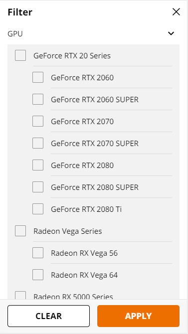

Fitt's Law
Ebay
This example shows the call to action for the user with the "Place bid button being nearly the only colored thing other than the product picture on the page.
Hick's Law
Newegg
Newegg is known for it's ease of access in searching for specific computer parts. This feature alone sets them apart from their main competition: Amazon.
Whitespace
Come unto Christ
This example shows the use of whitespace to demonstrate where one section ends and the other begins.